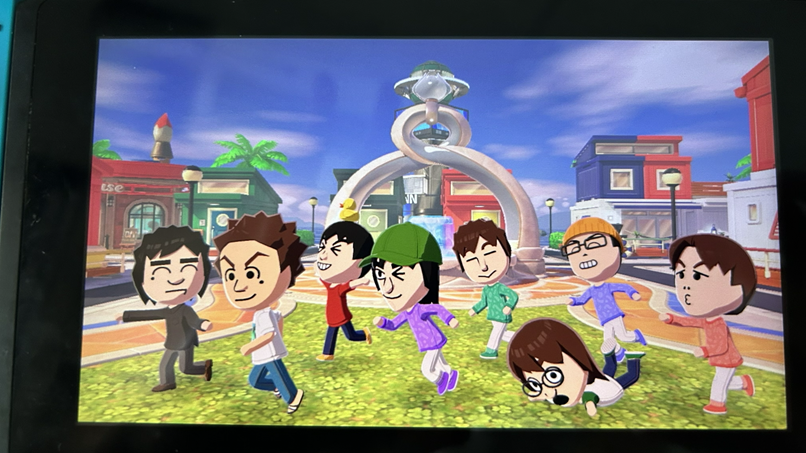
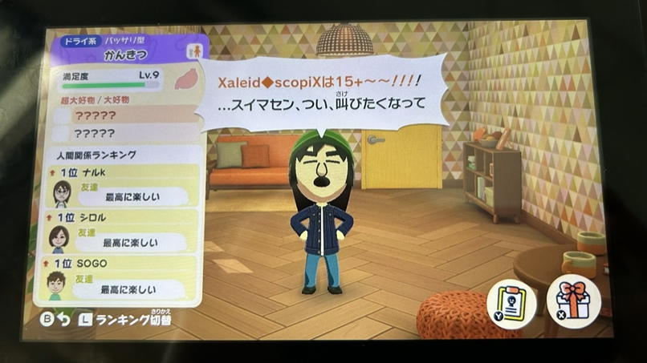

トモダチコレクション
自分のトモコレでは、既存キャラも入れると自分好みの世界観が崩れてしまうため、住人全員オリキャラで統一しています。
適当に作ったMiiの生活を眺めるのが凄く面白く、頭の中でネタを考える時がしばしばあります。


自分のトモコレでは、既存キャラも入れると自分好みの世界観が崩れてしまうため、住人全員オリキャラで統一しています。
適当に作ったMiiの生活を眺めるのが凄く面白く、頭の中でネタを考える時がしばしばあります。

